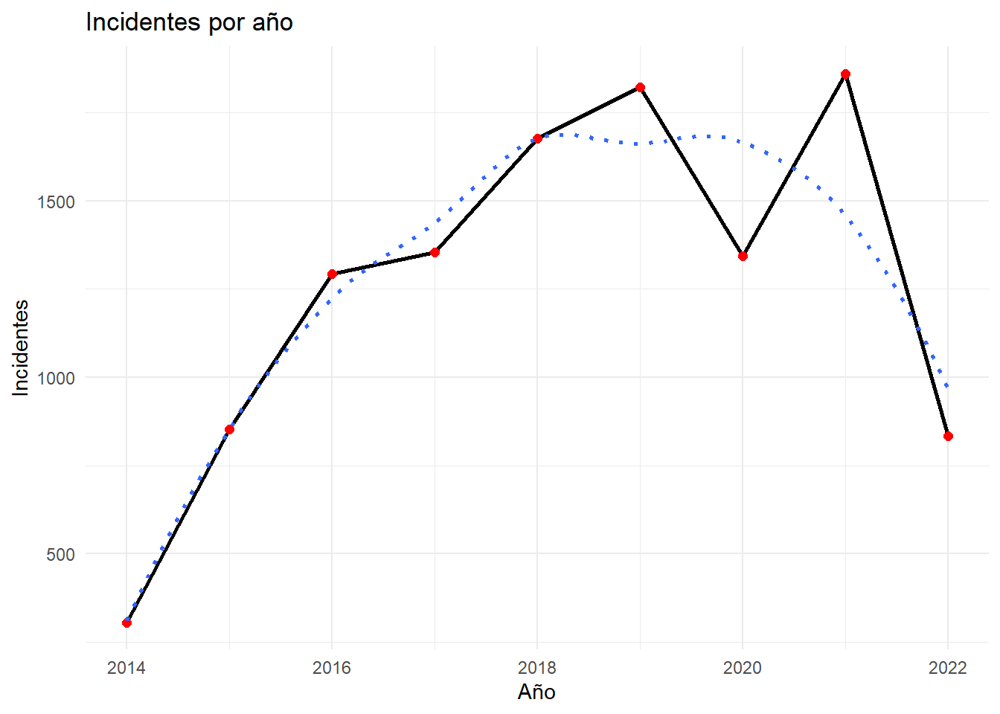
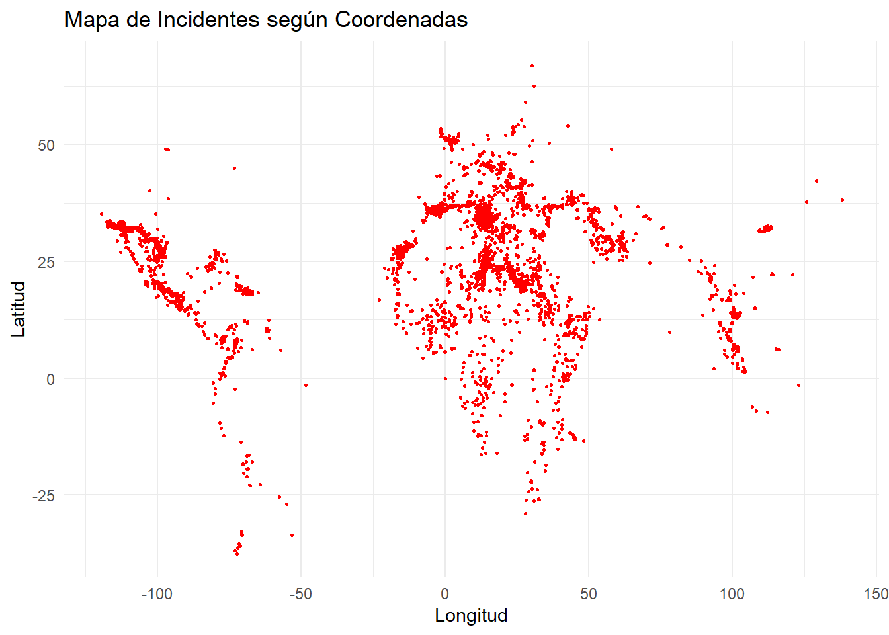
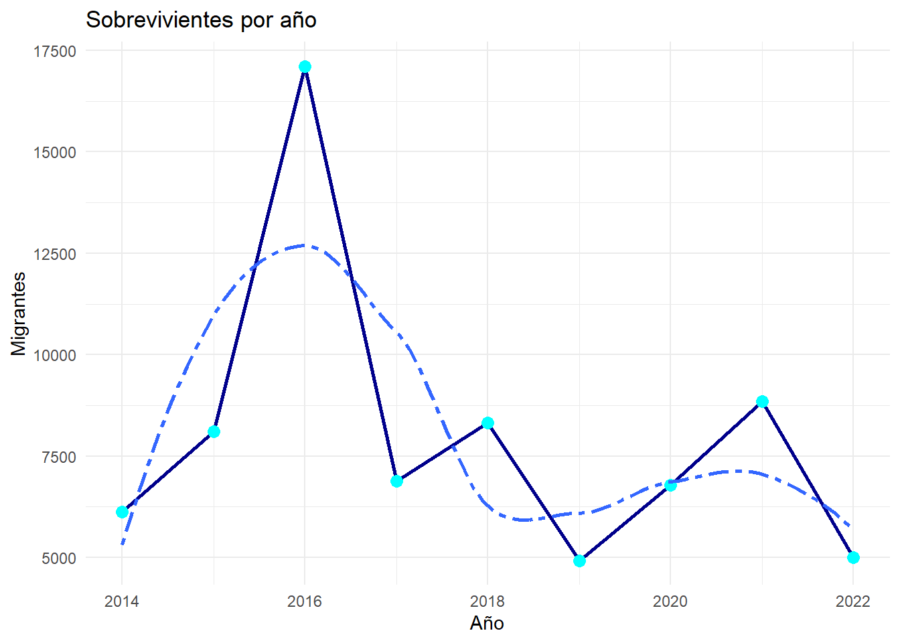
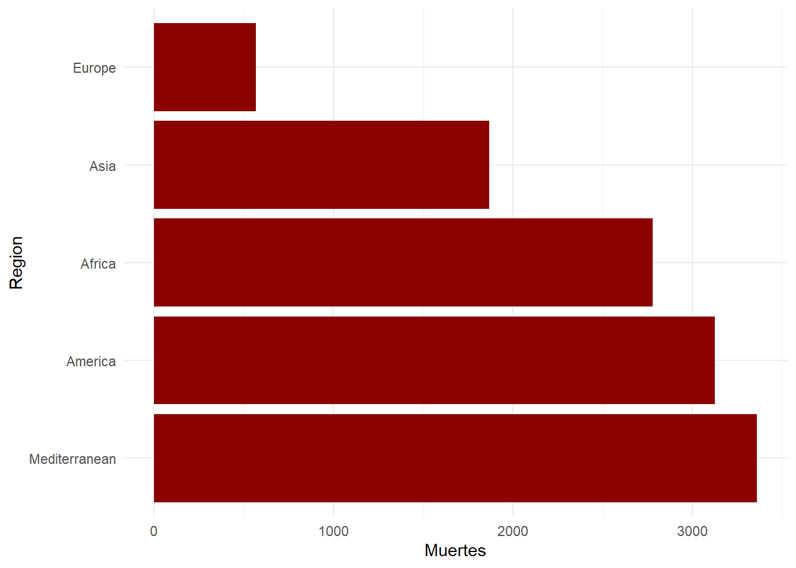

Código
suppressMessages(library(tidyverse))
suppressMessages(library(dplyr))
suppressMessages(library(tidyr))
suppressMessages(library(knitr))
suppressMessages(library(countrycode))
suppressMessages(library(forcats))


| Tipo | Tema general | Tema específico | Título | Año | Autor(es) |
|---|---|---|---|---|---|
| Salud | Exposición problemáticas | Crítica a la inmigración | 13 | 2022 | UN |
| Salud | Citar problemas psicológicos | Hacer énfasis en trastornos mentales de inmigrantes | 2 | 2012 | American Psychological Association |
El segundo texto: “Psychology of Immigration” recopila una serie de información médica y psicológica en aras de apoyar a servicios de apoyo a personas migrantes. La mayor parte del artículo consiste -además de proporcionar información precisa sobre trastornos mentales que pueden padecer personas inmigrantes- en señalar y enfatizar el tenso ambiente que pueden sufrir las personas que se enmarcan en la migración, ambiente que puede incluir: discriminación, xenofobia y violencia.
Curiosamente, aporta también datos y desmiente mitos acerca de lo que significa la migración mundialmente hoy en día. Uno de estos mitos sería que la migración está en alza, lo cual no es cierto; sucede lo contrario.
Con una relación que dota de cierto paralelismo, el texto número 13: “More than 50,000 migrants ‘die in search of a better life’” resulta en un texto ampliamente periodístico que critica las pobres circunstancias de los migrantes. Este texto generalmente trata de exponer datos, criticar circunstancias y plantear soluciones a las consecuencias de la migración.
La diferencia que presentan ambos artículos, si bien ambos están ampliamente entrelazados bajo una óptica de salud, reside en el foco de dar la información.
Es un hecho que ambos artículos discuten los problemas que enfrentan los migrantes al hacer sus travesías, también ambos artículos estudian datos y elaboran una narrativa que pone en alerta las dificultades que enfrentan todas las personas que se desplazan de un país a otro (sobre todo ilegalmente).
“The causes and consequences of the missing immigrants” por Lisa Camner McKay, resulta ser el primer texto a exponer en el enlace con temática sociológica. Este artículo, que en su traducción es: “Las causas y consecuencias de inmigrantes perdidos”, tiene un enfoque social y político. En él, la autora discute la gran problemática que acarrea la inmigración, no el hecho de que se dé, sino más bien los efectos negativos que implican que en los últimos años haya cada vez menos migración.
Esencialmente, la autora explica en qué afecta que cada vez menos personas emigren a los Estados Unidos. A diferencia de lo que se cree, los inmigrantes no son causa directa del crimen, la saturación de plazas de trabajo, o cualquier otro elemento disuasorio. Más bien, que haya menos migrantes en los Estados Unidos ha significado un debilitamiento en su economía, lo cual ya está mostrando signos.
La autora finalmente hace un llamado para que se pongan en marcha legislaciones que favorezcan el paso de migrantes a Estados Unidos. Dado que problemas como inflación y aumento de la pobreza son implicaciones de la falta de migración, es imperativo manejar esta problemática.
El segundo artículo a exponer en este enlace es “Introduction to Human Geography”. Este texto será de gran utilidad para la elaboración del marco teórico, así como también para contribuir a la elaboración de la lista de resultados que se desprenderán tanto de esta sección, como de los cálculos estadísticos.
Este libro, entre muchas cosas más, se dedica a explicar la relación entre los migrantes y los factores geográficos. Por ejemplo: los autores explican por qué los migrantes eligen unos países y no otros, qué tienen que ver las rutas con los destinos de estas personas, y cómo fenómenos naturales y/o meteorológicos afectan a quienes se embarcan en dichas odiseas.
A continuación, se tiene “Migrant deaths and disappearances” (Muertes y desapariciones de migrantes). Este es un texto periodístico e investigativo que ofrece un panorama repleto de datos e información sobre inmigrantes. Sin embargo, el artículo es más complejo que eso. En él, se detallan fuentes de alta calidad que relatan mediante información veraz y concisa lo que tiene que ver con la migración.
Se menciona, por ejemplo, Missing Migrants Projects, una página ampliamente utilizada en este trabajo investigativo. Además, se ofrecen más fuentes que explican datos en distintos sectores del mundo referentes a la migración.
El siguiente texto es “Protection of migrants from enforced disappearance: A human rights perspective”. Este es un texto periodístico-investigativo muy apreciado en el presente trabajo. No solo los autores Bernard Duhaime y Andréanne Thibault critican y exponen las difíciles condiciones que experimentan los migrantes, sino que discuten cómo los gobiernos son partícipes de las complicadas situaciones por las que pasan estas personas y qué deberían hacer estos para ofrecer mejores condiciones humanas.
“A decade of documenting more than 63,000 migrant deaths shows that fleeing is more lethal than ever” (Una década de documentación de más de 63,000 muertes de migrantes muestra que desplazarse es más letal que nunca), por Renata Brito y Kerstin Sopke, ofrece el lado más oscuro del presente proyecto, que también es el más triste.
En este texto periodístico e investigativo, se detalla mediante explicaciones históricas y sociales, además de datos, cómo los migrantes han estado muriendo en los últimos años, en gran parte debido a la falta de legislación gubernamental. El artículo también tiene contenido médico, ya que pone en perspectiva cómo esta situación afecta psicológicamente a los migrantes.
El último escrito a describir en esta sección es “Refugees and Asylum Seekers Dealing with the Production of Different Temporal Regimes by Asylum and Reception Policies” (Refugiados y solicitantes de asilo lidiando con la producción de diferentes regímenes temporales por políticas de asilo y recepción). En este texto, los autores Giuliana Sanò, Giulia Storato y Francesco Della Puppa escriben desde una perspectiva sociológica y psicológica, poniendo en tema la vida de las personas migrantes.
Este artículo es útil porque, a diferencia de los demás, tiene un enfoque más centrado no en la economía o la salud, sino en cómo viven las personas que deciden migrar.
Aunque todos los artículos y textos tienen una temática sociológica marcada, hay diferencias notables: - El primer texto, “The causes and consequences of the missing immigrants”, expone cómo afecta a Estados Unidos la disminución de la migración. A diferencia de otros artículos como “Migrant deaths and disappearances” y “Protection of migrants from enforced disappearance: A human rights perspective”, que se enfocan en datos y soluciones para los migrantes, este se centra más en las implicaciones económicas.
“Refugees and Asylum Seekers Dealing with the Production of Different Temporal Regimes by Asylum and Reception Policies” es el artículo más sociológico, ya que explora las experiencias de los migrantes desde una perspectiva exclusivamente humana, mientras que otros involucran factores políticos y geográficos.
“Introduction to Human Geography” es el único texto que menciona los fenómenos geográficos y naturales que afectan a las personas que deciden migrar, lo cual es un aspecto central del proyecto.
En conclusión, todos los textos son de gran interés para el desarrollo del proyecto investigativo. Aunque tienen similitudes, se establece que pertenecen a la categoría de sociología. El primer artículo de Lisa Camner ofrecerá una perspectiva sociológica-económica necesaria. “Introduction to Human Geography” proporcionará el marco geográfico y natural requerido. Los demás textos, de carácter más antropológico y sociológico, serán fundamentales para la construcción del marco teórico.
Inicialmente se tiene el texto: “Introducción a la Estadística”, el cual, aunque presenta un estilo sumamente didáctico, se prioriza su contenido relativo a la exposición de conceptos de la matemática y estadística. La manera distributiva del texto, que se compone de descripciones conceptuales de temas como: media, mediana y moda; y paralelamente, exposición a casos/situaciones donde se pueden hacer cálculos relativos a la Estadística, resultan productivos para el presente proyecto. Aunque no es este el texto en que los autores se basan completamente para desarrollar su investigación, es una fuente destacada y reconocida para apoyar el sentido metodológico.
Un escrito que posee gran similitud al anterior, de parte de Germán Fiallos, es: “La Correlación de Pearson y el proceso de regresión por el Método de Mínimos Cuadrados”. Este texto ofrece el material suficiente para el entendimiento integral de los métodos estadísticos: Regresión Lineal Simple y el Coeficiente de Pearson. Métodos que se espera utilizar para elaborar una serie de cálculos con base en las listas de datos mencionadas. Esencialmente, este texto ofrece explicaciones en cuanto a: diagramas de dispersión, conceptos del Coeficiente de Pearson (como si es directo o indirecto), comparación y contraste entre el Coeficiente de Pearson y la Regresión Lineal Simple, entre otros. Se podría decir que todo el contenido de este artículo será la base del conocimiento que se utilizará para la creación de resultados y cálculos que conceptualicen los objetivos planteados del proyecto.
La siguiente y penúltima página web de la que se hablará es: “Missing Migrants Project”. Esta es básicamente la base del proyecto. Aquí están contenidas todas las bases de datos a utilizar en el trabajo investigativo. A manera de resumen, “Missing Migrants Project” expone series de bases de datos referentes a desapariciones y muertes de migrantes. Bases de datos que contienen información tan extensa y variada como: regiones, periodos, tipos de desapariciones y/o muertes, entre otras variables. El último texto por resumir en esta sección es: “Inmigration Data Matters”; también un trabajo investigativo que expone una colección de numerosas fuentes relativas a la desaparición de migrantes. Temas relativos a migrantes como: empleabilidad, salud, organizaciones que dan soporte y otras características de los migrantes son tratados en ese proyecto.
Se pueden enumerar diferentes contrastes entre los textos mencionados. Por ejemplo, las fuentes bibliográficas 5 y 6 son de un carácter más pedagógico. Ambos tienen el propósito de explicar temas estadísticos desde una óptica educativa, con el fin de que estudiantes puedan aprender de ellos y aplicar esta materia tanto en sus estudios como en su trabajo actual y/o futuro. Esto implica que se diferencian en gran medida de los otros dos textos: “Missing Migrants Project” y “Inmigration Data Matters”, que presentan bases de datos y recursos para la investigación referente a los migrantes desaparecidos. Estos últimos se describen como textos 8 y 3.
Los puntos de contraste estimados son: - Los textos 5 y 6 son pedagógicos-educativos, mientras que los textos 8 y 3 son meramente investigativos. - Mientras que los textos 8 y 3 pueden ser utilizados para el apoyo de investigación teórico-numérica, los textos 5 y 6 sí permiten la realización de cálculos estadísticos, ya que ofrecen explicaciones y ejemplos prácticos.
A modo de conclusión, se establece que los cuatro textos explicados en este enlace presentan un enfoque orientado a la Estadística, pero se separan en dos grupos por sus naturalezas completamente distintas.
“Missing Migrants Project” y “Inmigration Data Matters” son fuentes que se utilizarán inteligentemente para la recolección de datos y contenido teórico que fundamente el contexto del presente proyecto. Puesto que ambas fuentes son trabajos investigativos, el proyecto tomará inspiración de estos para la construcción de un trabajo integral que los use como ejemplos.
En cuanto a “La Correlación de Pearson y el proceso de regresión por el Método de Mínimos Cuadrados” y “Introducción a la Estadística”, el material presente en estos textos colaborará en el diseño de una de las partes más esenciales del trabajo: la creación de modelos estadísticos y la exposición de resultados que contribuyan a la expansión del conocimiento sobre migrantes desaparecidos.
Ambos artículos son de naturaleza sumamente directa. En un primer caso, se tiene la fuente de la Real Academia Española (RAE) definiendo la palabra: “Determinar”. Esto resulta relevante para el trabajo investigativo únicamente porque consiste en la palabra clave que conecta, dirige, y entrelaza distintos métodos investigativos empleados.
Por otro lado, el artículo de la Organización Mundial de la Salud (OMS) es más extenso y fructífero para el proyecto. El texto ofrecido por la OMS es altamente refrescante y útil, además de ser una herramienta de concientización. Mediante este artículo periodístico/investigativo, la OMS expone la importancia y/o necesidad de proteger a las personas migrantes de los peligros a los que se enfrentan a diario. No es solo una invitación ligera, sino una crítica directa a la situación actual, exigiendo mayor justicia por parte de los gobiernos y organizaciones sin fines de lucro.
Resulta difícil un contraste entre ambos textos debido a sus naturalezas completamente diferentes. Uno ofrece una simple definición de una palabra, mientras que el otro cita una serie de consejos y críticas referentes a la situación migratoria. La RAE, en su definición de “Determinar”, tiene como único objetivo informar sobre el significado de la palabra, sin ningún sesgo u opinión subjetiva. Es un texto técnico que refleja la precisión lingüística y académica de una institución como la RAE, sin intención de influir en la acción.
Por el contrario, el texto de la OMS, titulado “Act now to save lives and prevent migrants from going missing”, se enfoca en exponer hechos investigados por la propia organización. Su finalidad es desarrollar un marco lleno de consejos y opiniones para ayudar a las víctimas migrantes, promoviendo acciones inmediatas.
Aunque ambos artículos tienen un alto grado de pedagogía, tratan de asuntos completamente opuestos. No hay una comparación directa entre ellos, lo que los hace aún más valiosos para este trabajo. La combinación de una fuente académica y una fuente de acción social enriquece el proyecto al aportar perspectivas diversas. En conclusión, estos artículos forman parte integral de la estructura del trabajo investigativo debido a su utilidad única y su diferencia en enfoque y contenido.
La base de datos renombrada “migrantes_desaparecidos” se encuentra en formato tidy. Las observaciones en las variables que presentan número de muertes, sobrevivientes o aún desaparecidos con valores NA se refiere a los casos donde se desconoce la situación de los individuos. Para el análisis del proyecto se utiliza “Todomigrantes_desaparecidos” donde se consideran los NA como 0, así evitar omitir casos.
Se busca responder lo siguiente:
¿Qué patrones se detectan sobre los grupos de personas migrantes de todo el mundo cuando son declaradas desaparecidas?
¿Cuáles son los trasfondos geográficos, sociopolíticos y psicológicos que pueden determinar el destino de un porcentaje alto de migrantes se declare desaparecido?
¿Qué determina que un migrante se considere desaparecido?
¿Qué países son los que contienen el mayor porcentaje de migrantes desaparecidos por año?
Nos enfocaremos en la cuarta pregunta, pues lo cuadros resumenes logran acercarse a una respuesta, sin embargo se debe generalizar a regiones y no países debido a la información con la que se cuenta.
Para tener una mayor facilidad al trabajar, se utiliza ProjectTemplate y además se utilizan los siguientes paquetes para manipular la base de datos: tidyverse, dplyr, tidyr y knitr.
suppressMessages(library(tidyverse))
suppressMessages(library(dplyr))
suppressMessages(library(tidyr))
suppressMessages(library(knitr))
suppressMessages(library(countrycode))
suppressMessages(library(forcats))Primero se realiza la limpieza, donde se unen todos los datos en un solo dataset, además de cambiar el formato de algunas columnas y agregar/quitar variables:
#|echo: FALSE
#|warning: FALSE
#|messages: FALSE
lista_archivos <- lapply(X = dir(path = "data/"),
FUN = function(f){
read_csv(paste0("data/", f))
})Rows: 306 Columns: 21
── Column specification ────────────────────────────────────────────────────────
Delimiter: ","
chr (12): Main ID, Incident ID, Region, Incident Date, Reported Month, Cause...
dbl (9): Year, Number Dead, Minimum Estimated Number of Missing, Total Numb...
ℹ Use `spec()` to retrieve the full column specification for this data.
ℹ Specify the column types or set `show_col_types = FALSE` to quiet this message.
Rows: 853 Columns: 21
── Column specification ────────────────────────────────────────────────────────
Delimiter: ","
chr (12): Main ID, Incident ID, Region, Incident Date, Reported Month, Cause...
dbl (8): Year, Number Dead, Minimum Estimated Number of Missing, Number of ...
num (1): Total Number of Dead and Missing
ℹ Use `spec()` to retrieve the full column specification for this data.
ℹ Specify the column types or set `show_col_types = FALSE` to quiet this message.
Rows: 1293 Columns: 21
── Column specification ────────────────────────────────────────────────────────
Delimiter: ","
chr (12): Main ID, Incident ID, Region, Incident Date, Reported Month, Cause...
dbl (9): Year, Number Dead, Minimum Estimated Number of Missing, Total Numb...
ℹ Use `spec()` to retrieve the full column specification for this data.
ℹ Specify the column types or set `show_col_types = FALSE` to quiet this message.
Rows: 1354 Columns: 21
── Column specification ────────────────────────────────────────────────────────
Delimiter: ","
chr (12): Main ID, Incident ID, Region, Incident Date, Reported Month, Cause...
dbl (9): Year, Number Dead, Minimum Estimated Number of Missing, Total Numb...
ℹ Use `spec()` to retrieve the full column specification for this data.
ℹ Specify the column types or set `show_col_types = FALSE` to quiet this message.
Rows: 1675 Columns: 21
── Column specification ────────────────────────────────────────────────────────
Delimiter: ","
chr (12): Main ID, Incident ID, Region, Incident Date, Reported Month, Cause...
dbl (9): Year, Number Dead, Minimum Estimated Number of Missing, Total Numb...
ℹ Use `spec()` to retrieve the full column specification for this data.
ℹ Specify the column types or set `show_col_types = FALSE` to quiet this message.
Rows: 1822 Columns: 21
── Column specification ────────────────────────────────────────────────────────
Delimiter: ","
chr (12): Main ID, Incident ID, Region, Incident Date, Reported Month, Cause...
dbl (9): Year, Number Dead, Minimum Estimated Number of Missing, Total Numb...
ℹ Use `spec()` to retrieve the full column specification for this data.
ℹ Specify the column types or set `show_col_types = FALSE` to quiet this message.
Rows: 1344 Columns: 21
── Column specification ────────────────────────────────────────────────────────
Delimiter: ","
chr (12): Main ID, Incident ID, Region, Incident Date, Reported Month, Cause...
dbl (9): Year, Number Dead, Minimum Estimated Number of Missing, Total Numb...
ℹ Use `spec()` to retrieve the full column specification for this data.
ℹ Specify the column types or set `show_col_types = FALSE` to quiet this message.
Rows: 1860 Columns: 21
── Column specification ────────────────────────────────────────────────────────
Delimiter: ","
chr (12): Main ID, Incident ID, Region, Incident Date, Reported Month, Cause...
dbl (9): Year, Number Dead, Minimum Estimated Number of Missing, Total Numb...
ℹ Use `spec()` to retrieve the full column specification for this data.
ℹ Specify the column types or set `show_col_types = FALSE` to quiet this message.
Rows: 834 Columns: 21
── Column specification ────────────────────────────────────────────────────────
Delimiter: ","
chr (12): Main ID, Incident ID, Region, Incident Date, Reported Month, Cause...
dbl (9): Year, Number Dead, Minimum Estimated Number of Missing, Total Numb...
ℹ Use `spec()` to retrieve the full column specification for this data.
ℹ Specify the column types or set `show_col_types = FALSE` to quiet this message.migrantes_desaparecidos <- bind_rows(lista_archivos) |>
janitor::clean_names()
migrantes_desaparecidos <- migrantes_desaparecidos |> #separate_wider_delim(col, delim)
separate(coordinates,
into = c("latitud", "longitud"),
sep = ",", fill = "left"
)
migrantes_desaparecidos$latitud <- as.numeric(migrantes_desaparecidos$latitud)
migrantes_desaparecidos$longitud <- as.numeric(migrantes_desaparecidos$longitud)#separa las coordenadas
migrantes_desaparecidos <- migrantes_desaparecidos |> #extrae la fecha exacta
mutate(incident_date = as.Date(
str_extract(incident_date,
"\\b\\d{2}/\\d{2}/\\d{4}\\b"), format = "%m/%d/%Y")
)
migrantes_desaparecidos <- migrantes_desaparecidos[ , -c(1, 6, 9, 16, 20:21)] #elimina la columna 1
migrantes_desaparecidos <- migrantes_desaparecidos |>
mutate(
location_of_death = str_remove_all(location_of_death, " \\(see coordinates for exact location\\)")
)
migrantes_desaparecidos <- migrantes_desaparecidos |> #Extrae países y causas de muerte
mutate(
country_of_death = countrycode(location_of_death,
origin = 'country.name',
destination = 'country.name'),
cause_of_death = str_extract(cause_of_death, "^[^/]+"),
region = str_extract(region,
"Asia|America|Africa|Europe|Caribbean|Mediterranean"),
region = str_replace(region, "Caribbean", "America")
)Warning: There were 2 warnings in `mutate()`.
The first warning was:
ℹ In argument: `country_of_death = countrycode(location_of_death, origin =
"country.name", destination = "country.name")`.
Caused by warning:
! Some values were not matched unambiguously: #63 beach foreshore, in the vicinity of Number 60 village, East Berbice, Corentyne, Guyana, Carrera 5 N° 2-56 del barrio 26 de febrero,Albania,Maicao,La Guajira Colombiana, "El Hielo" border crossing point, Manzanillo, Montecristi, Dominican Republic, near border with Haiti, 1.3 km from border wall in Sunland Park, Doña Ana County, New Mexico, USA, 10 hours walking from Senafe, Eritrea, towards the border with Ethiopia, 100KM from Jaghboub, Libya, near border with Egypt, 120 KM away from Chadian border and 310 KM South Kufra, Libya, 128 nautical miles southwest of the Canary Islands, 130 miles west of Marco Island, off southwest Florida, 15 miles northeast of Cape Greco, Cyprus (boat departed from Tripoli, Lebanon), 16 nautical miles north of Garabouli (Castelverde), Libya - Embarkation from Alkums on 30.06.2, 1610 East Paisano Drive, El Paso, El Paso County, Texas, 20 KM North Ra's Ajdir (on border), Ben Gardane, Tunisia - embarkation from Abu Kammash, Libya on night between 14-15 Dec, 20 miles east of Hollywood Beach, Florida, 20 miles off the coast of Alicante, Spain - boat departed from Algeria, 20 miles off the coast of Cartagena, Murcia, Spain - boat departed from Mostaganem, Algeria, 200km off the coast of Western Sahara, having drifted off to about 650km south of the Canary Islands - boat had departed on 28 July from Dakhla with 46POB, was adrift for 14 days. Survivors disembarked in Las Palmas, Canary Islands, Spain, 23 miles east of Fort Pierce, Florida, USA - Departed on 10 Feb 2021 from Bimini, Bahamas., 24 miles south of Miami, Florida, 250km off Gran Canaria, Canary Islands, Spain - embarkation from the Western Sahara about one week earlier., 27 miles southeast of Alboran Island in the Alboran Sea between Morocco and Spain, 28 abandoned human trafficking camps scattered along a 50 km (30 mile) stretch of the Malaysia border with Thailand (Wang Kelian site), 28 miles southwest of Isla de Alborán, between Morocco and Spain, 3.2 kilometers from the resort city of Bodrum, near Kara Ada, en route to Kos, 30 km from Inkhalid, Mali, near border with Algeria. Departed from Bordj Badji Mokhtar on foot., 32 Km off the coast of Libya, south of Malta, 37 miles west of Cabo de Trafalgar, Cadiz, Spain - embarkation 3 days before from Arcila (south of Tanger), Morocco, 4 kilometers from the Nicaragua-Costa Rica border, Río San Juan Department, Esperanza Verde reserve, Nicaragua, 40 miles off the coast of Harwich, Essex, UK, 40 miles south-east of Cabo de Gata, Almería, Spain - boat departed from Algeria (Alboran Sea), 40km from Dirkou, Niger on a road that goes towards Libya, 44 KM Northeast of Zarzis, Tunisia - embarkation from Libya, 5 nautical miles west of Alboran Island, between Spain and Morocco, 6 miles Southeast Kerkennah Islands, Tunisia - embarkation from Zuwara, Libya on night between 22-23 May, 6.3 nautical miles from Güiria, Sucre, Venezuela, en route to Trinidad and Tobago, 62 miles south of Alboran Island, Alboran Sea, between Morocco and Spain, 650km south of the Canary Islands, Spain - departure from Dakhla, Western Sahara on 28 July, 7 nautical miles north of Qarapoli (Castelverde), Libya - Remains washed ashore at Qarapoli and Tajoura in following days, 77km south-east of Lanzarote, Spain - departure from Tarfaya, Morocco, 97 km north of border, Kenedy County, Texas, A16 motorway near Calais, A8 motorway near Roquebrune-Cap-Martin, France, Abandoned airfield outside Downham Market, England, UK, About 12 miles off Desecheo Island, Puerto Rico, USA - departure from Dominican Republic, About 2 miles south of Hondale Road, between Deming and Columbus, Luna County, New Mexico, USA, About 200 meters off the coast of Ayvacık district, Çanakkale Province, Turkey, likely en route to Lesvos, Greece, Aegean Sea, After being rescued off the coast of the Canary Islands, Spain - embarkation on 17 June, 60km south of Dakhla, Western Sahara, After disembarkation in Port of Tarifa, Cádiz, Spain (rescued from boat in Gibraltar Strait), Agia Fotia on Lesvos, Agia Triada area in Lesvos, Ain Diwar, Syria near border of Syria/Turkey/Iraq, Aktobe region, Kazakshtan, near the border with Russia, Alboran Sea between Morocco and Spain, Alborán Sea, 32 nautical miles south of Cabo de Gata, Almería, Spain - boat departed from Algeria, Alboran Sea, 56 nautical miles east of Carboneras, Almería, Spain - boat departed from Algeria, Algerian-Mauritanian border, All American Canal and Wisteria Canal, Calexico, CA 92231. GPS: N32.66140 W115.55400, All American Canal, CA near Calexico, All American Canal, Calexico CA, All American Canal, Calexico, Imperial County, California, All American Canal, Drop 2, Winterhaven, Imperial County, California, All American Canal, Drop 3, Holtville, Imperial County, California, All American Canal, East of Highline Canal, Calexico CA, Altinkoy region in Izmir province's Cesme district, en route to Chios, Ancona, Italy. Had likely come on ferry from Greece., Andaman Sea, Anza-Borrego Desert State Park, San Diego County, California, Approximately 16 miles south of Key West, Monroe County, Florida, USA - Embarked from Puerto de Mariel, Cuba on 23.05.2021, Approximately 34 miles on New Mexico state roads south of Interstate 10, on New Mexico State Road 146, Grant County, New Mexico, USA , Approximately 40 miles from the US-Mexico border, near San Manuel, Hidalgo County, Texas, USA, Approximately 60 nautical miles southeast of Crete, Greece - departure from Turkey, Around Abu Hamad at small village, Sudan, around Aswan in the Sahara desert, Sudan, Around the borders of Egypt and Sudan near to Aswan, Ash Shamaliyah, Sudan, Assamaka, Niger, near border with Algeria, Assamakka, Niger - close to the board with Algeria, At the University Medical Center in El Paso, El Paso County, Texas, USA - after being in a car accident on New Mexico State Road 185 on Aug 3 2021, At a reception camp 30km south of Warsaw, Poland - one day after being evacuated from Afghanistan, At Dewele point of entry from Djibouti to Ethiopia, At Fort Pierce Inlet, Florida, USA - departure from Bimini, Bahamas on 22 Jan, At international border crossing Pakistan-India, close to Bakhasar, Rajasthan, India, At sea between The Gambia and the Canary Islands, Spain - boat found 800km south of Tenerife, departed from The Gambia 19 days before, At sea, between Venezuela and Curaçao, At Tchibarakaten, a water point and a crossing point located near the Algerian-Nigerian border, At Tessalit, Mali - close to the border with Algeria, At the base of Mt. Cristo Rey, Sunland Park, Doña Ana County, New Mexico, USA, At the border between Eritrea and Ethiopia, Near guna guna, At the border between Pembinal, North Dakota, USA and Emerson, Manitoba, Canada, At the border of Eritrea and Sudan, At the border of Eritrea and Sudan, Near Teseney, Eritrea, At the customs office no. 2 (at the border between Bolivia and Chile), Pisiga, Bolivia, At the dock of Ancona, Italy - on board of a ferry coming from Greece, At the Honduras-Guatemala border, close to Corinto, Honduras, At the intersection of Mangana Hein Road and U.S. Highway 83 north, Laredo, Webb County, Texas, At the land border between Morocco and Algeria en route to Oujda, Morocco, At the Libyan Desert, after a three day drive from the Sudanese Border., Libya, At the Mali-Algeria border between Elkhalil, Mali and Bordj Badji Mokhtar, Algeria, At the Mali-Algeria border, between In-Halil (Mali) and Borj (Algeria), At the Moldova-Ukraine Palanca border crossing, At the OYO Metropolitan Hotel in Blonk Street, Sheffield, UK, At the port of Valencia, Spain - They arrived in the Liberian ship "Leto", coming from Ivory Coast. The jumped off the ship just before it docked., At the port of Valencia, Spain - They were found dead inside a container on the Liberian ship "Sag Good Timing", coming from Algeria., at the Spain-Morocco border, in Melilla, Spain, At the Sudan-Ethiopia border, Amhara Region, West Gondar Zone , Metema woreda, Achira kebele, Gage village, At the Sudanese Libyan border, Sudan, At the Syria-Turkey border close to Harim, Idlib, Syria, At the Syria-
ℹ Run `dplyr::last_dplyr_warnings()` to see the 1 remaining warning.migrantes_desaparecidos$cause_of_death <- as.factor(migrantes_desaparecidos$cause_of_death)
migrantes_desaparecidos$region <- as.factor(migrantes_desaparecidos$region)
migrantes_desaparecidos$country_of_death <- as.factor(migrantes_desaparecidos$country_of_death)
glimpse(migrantes_desaparecidos)Rows: 11,341
Columns: 17
$ incident_id <chr> "2014.MMP00001", "2014.MMP00002", …
$ region <fct> America, America, America, America…
$ incident_date <date> 2014-01-06, 2014-01-12, 2014-01-1…
$ year <dbl> 2014, 2014, 2014, 2014, 2014, 2014…
$ number_dead <dbl> 1, 1, 1, 1, 1, 1, 12, 1, 1, 1, 1, …
$ minimum_estimated_number_of_missing <dbl> NA, NA, NA, NA, 0, NA, NA, NA, NA,…
$ number_of_survivors <dbl> NA, NA, NA, NA, 2, NA, NA, NA, NA,…
$ number_of_females <dbl> NA, NA, NA, NA, NA, NA, 9, NA, NA,…
$ number_of_males <dbl> 1, NA, NA, 1, 1, NA, NA, NA, NA, N…
$ number_of_children <dbl> NA, NA, NA, NA, NA, NA, 3, NA, NA,…
$ cause_of_death <fct> Mixed or unknown, Mixed or unknown…
$ location_of_death <chr> "Pima Country Office of the Medica…
$ latitud <dbl> 31.650259, 31.597130, 31.940260, 3…
$ longitud <dbl> -110.3665, -111.7376, -113.0113, -…
$ migrantion_route <chr> "US-Mexico border crossing", "US-M…
$ source_quality <dbl> 5, 5, 5, 5, 1, 5, 5, 5, 5, 5, 5, 5…
$ country_of_death <fct> United States, United States, Unit…A continuación se muestran algunas estadísticas sobre los datos recolectados como promedio (prom), porcentaje (per), máximo (max), variación (var)y desviación (desv) acerca de los casos de mueres (m), sobrevivientes (s) y desaparecidos (d):
Resumen por Año:
migrantes_desaparecidos |>
filter(!is.na(incident_date)) |>
group_by(año = format(incident_date, "%Y")) |>
summarise(
prom_m = mean(number_dead),
prom_s = mean(number_of_survivors),
prom_d = mean(minimum_estimated_number_of_missing),
per_m = sum(number_dead) /
(sum(number_dead) +
sum(number_of_survivors) +
sum(minimum_estimated_number_of_missing)) * 100,
per_s = sum(number_of_survivors) /
(sum(number_dead) +
sum(number_of_survivors) +
sum(minimum_estimated_number_of_missing)) * 100,
per_d = sum(minimum_estimated_number_of_missing) /
(sum(number_dead) +
sum(number_of_survivors) +
sum(minimum_estimated_number_of_missing)) * 100) |>
kable(caption = "Resumen de Migrantes Desaparecidos por Año")| año | prom_m | prom_s | prom_d | per_m | per_s | per_d |
|---|---|---|---|---|---|---|
| 2014 | 5.725490 | 20.006536 | 11.6535948 | 15.31469 | 53.51399 | 31.17133 |
| 2015 | 4.779601 | 9.494725 | 3.0914420 | 27.52312 | 54.67495 | 17.80193 |
| 2016 | 3.148492 | 13.234339 | 3.1036350 | 16.15733 | 67.91554 | 15.92713 |
| 2017 | 2.706056 | 5.087149 | 1.9350074 | 27.81658 | 52.29274 | 19.89068 |
| 2018 | 1.896119 | 4.967761 | 1.0811940 | 23.86534 | 62.52630 | 13.60836 |
| 2019 | 1.989566 | 2.704558 | 0.9758375 | 35.08959 | 47.69976 | 17.21065 |
| 2020 | 1.681955 | 5.097744 | 1.5150376 | 20.27737 | 61.45758 | 18.26505 |
| 2021 | 1.820430 | 4.760215 | 1.3591398 | 22.92795 | 59.95395 | 17.11809 |
| 2022 | 1.495204 | 5.994005 | 1.4676259 | 16.69344 | 66.92102 | 16.38554 |
Resumen por Region:
migrantes_desaparecidos |>
filter(!is.na(region)) |>
group_by(region) |>
summarise(
prom_m = mean(number_dead),
prom_s = mean(number_of_survivors),
prom_d = mean(minimum_estimated_number_of_missing),
per_m = sum(number_dead) /
(sum(number_dead) +
sum(number_of_survivors) +
sum(minimum_estimated_number_of_missing)) * 100,
per_s = sum(number_of_survivors) /
(sum(number_dead) +
sum(number_of_survivors) +
sum(minimum_estimated_number_of_missing)) * 100,
per_d = sum(minimum_estimated_number_of_missing) /
(sum(number_dead) +
sum(number_of_survivors) +
sum(minimum_estimated_number_of_missing)) * 100) |>
kable(caption = "Resumen de Migrantes Desaparecidos por Región")| region | prom_m | prom_s | prom_d | per_m | per_s | per_d |
|---|---|---|---|---|---|---|
| Caribbean | 2.240601 | 5.8571429 | 6.0601504 | 15.82581 | 41.370154 | 42.8040361 |
| Central America | 1.426916 | 2.0739750 | 0.0811052 | 39.83578 | 57.899975 | 2.2642448 |
| Central Asia | 52.000000 | 5.0000000 | 0.0000000 | 91.22807 | 8.771930 | 0.0000000 |
| Eastern Africa | 3.577938 | 3.1846523 | 0.8297362 | 47.12571 | 41.945673 | 10.9286166 |
| Eastern Asia | 1.375000 | 3.7500000 | 3.3750000 | 16.17647 | 44.117647 | 39.7058824 |
| Europe | 1.513462 | 1.8615385 | 0.0942308 | 43.62528 | 53.658537 | 2.7161863 |
| Mediterranean | 4.119434 | 26.6867470 | 8.6113148 | 10.45078 | 67.702796 | 21.8464278 |
| Middle Africa | 2.452055 | 1.0136986 | 0.0958904 | 68.84615 | 28.461538 | 2.6923077 |
| North America | 1.377517 | 0.2822987 | 0.0100671 | 82.49184 | 16.905300 | 0.6028636 |
| Northern Africa | 2.710805 | 2.8781780 | 1.0037076 | 41.11834 | 43.657106 | 15.2245521 |
| South-eastern Asia | 5.473214 | 16.8125000 | 7.7767857 | 18.20612 | 55.925156 | 25.8687259 |
| South America | 1.854167 | 1.8750000 | 0.2864583 | 46.17380 | 46.692607 | 7.1335927 |
| Southern Africa | 3.200000 | 0.4000000 | 0.9000000 | 71.11111 | 8.888889 | 20.0000000 |
| Southern Asia | 1.489469 | 0.8643639 | 0.0353833 | 62.34133 | 36.177715 | 1.4809591 |
| Western Africa | 2.218916 | 1.3347503 | 0.5069075 | 54.64538 | 32.870976 | 12.4836430 |
| Western Asia | 3.292169 | 9.4126506 | 0.5481928 | 24.84091 | 71.022727 | 4.1363636 |
Resumen por País:
migrantes_desaparecidos |>
filter(!is.na(country_of_death)) |>
group_by(pais = country_of_death) |>
summarise(
prom_m = mean(number_dead),
prom_s = mean(number_of_survivors),
prom_d = mean(minimum_estimated_number_of_missing),
per_m = sum(number_dead) /
(sum(number_dead) +
sum(number_of_survivors) +
sum(minimum_estimated_number_of_missing)) * 100,
per_s = sum(number_of_survivors) /
(sum(number_dead) +
sum(number_of_survivors) +
sum(minimum_estimated_number_of_missing)) * 100,
per_d = sum(minimum_estimated_number_of_missing) /
(sum(number_dead) +
sum(number_of_survivors) +
sum(minimum_estimated_number_of_missing)) * 100) |>
arrange(desc(prom_m)) |>
slice_head(n = 15) |>
kable(caption = "Resumen de Migrantes Desaparecidos por País")| pais | prom_m | prom_s | prom_d | per_m | per_s | per_d |
|---|---|---|---|---|---|---|
| Congo - Kinshasa | 24.500000 | 0.00000 | 0.000000 | 100.00000 | 0.00000 | 0.000000 |
| Yemen People’s Republic | 22.500000 | 36.75000 | 7.750000 | 33.58209 | 54.85075 | 11.567164 |
| Turks & Caicos Islands | 13.000000 | 21.66667 | 18.333333 | 24.52830 | 40.88050 | 34.591195 |
| Nepal | 12.000000 | 21.00000 | 0.000000 | 36.36364 | 63.63636 | 0.000000 |
| Afghanistan | 11.941176 | 0.00000 | 0.000000 | 100.00000 | 0.00000 | 0.000000 |
| Haiti | 10.500000 | 12.50000 | 28.000000 | 20.58824 | 24.50980 | 54.901961 |
| Malaysia | 10.458333 | 45.12500 | 5.541667 | 17.10975 | 73.82413 | 9.066121 |
| Cyprus | 9.666667 | 44.66667 | 8.333333 | 15.42553 | 71.27660 | 13.297872 |
| Austria | 9.625000 | 3.37500 | 0.000000 | 74.03846 | 25.96154 | 0.000000 |
| Madagascar | 8.000000 | 8.00000 | 0.000000 | 50.00000 | 50.00000 | 0.000000 |
| Zambia | 7.000000 | 28.00000 | 0.750000 | 19.58042 | 78.32168 | 2.097902 |
| Yemen | 6.743590 | 46.76923 | 1.923077 | 12.16466 | 84.36633 | 3.469010 |
| Lesotho | 6.000000 | 0.00000 | 6.000000 | 50.00000 | 0.00000 | 50.000000 |
| Zimbabwe | 5.800000 | 6.00000 | 0.200000 | 48.33333 | 50.00000 | 1.666667 |
| Bangladesh | 5.632653 | 10.75510 | 3.367347 | 28.51240 | 54.44215 | 17.045455 |
Resumen por Causa de Muerte:
migrantes_desaparecidos |>
filter(!is.na(cause_of_death)) |>
group_by(cause_of_death) |>
summarise(
casos = sum(number_dead),
prom_m = mean(number_dead),
per_m = sum(number_dead)/sum(migrantes_desaparecidos$number_dead) * 100,
Max_M = max(number_dead),
Var_M = var(number_dead),
Desv_M = sd(number_dead)) |>
kable(caption = "Resumen de Causa de Muerte de Migrantes Desaparecidos")| cause_of_death | casos | prom_m | per_m | Max_M | Var_M | Desv_M |
|---|---|---|---|---|---|---|
| Accidental death | 571 | 1.349882 | 2.095490 | 64 | 11.592932 | 3.404840 |
| Drowning | 10239 | 3.475560 | 37.575691 | 750 | 292.536754 | 17.103706 |
| Harsh environmental conditions | 2371 | 2.045729 | 8.701237 | 44 | 12.356284 | 3.515151 |
| Mixed or unknown | 6292 | 2.151847 | 23.090756 | 123 | 25.582819 | 5.057946 |
| Sickness | 1296 | 1.305136 | 4.756138 | 23 | 1.752564 | 1.323845 |
| Vehicle accident | 4062 | 2.236784 | 14.906969 | 52 | 16.825445 | 4.101883 |
| Violence | 2418 | 2.238889 | 8.873720 | 167 | 44.888199 | 6.699866 |
A continuación se muestran algunas gráficas sobre los datos recolectados, utilizando los siguientes paquetes:
suppressMessages(library(ggplot2))
suppressMessages(library(cowplot))Incidentes por año
migrantes_desaparecidos |>
group_by(year) |>
summarise(
frecuencia = n()
) |>
ggplot(aes(x = year, y = frecuencia)) +
geom_line(color = "black", size = 1) +
geom_point(color = "red", size = 2) +
geom_smooth(se = FALSE, size = 1, linetype = "dotted") +
labs(title = "Incidentes por año",
x = "Año",
y = "Incidentes") +
theme_minimal()Warning: Using `size` aesthetic for lines was deprecated in ggplot2 3.4.0.
ℹ Please use `linewidth` instead.`geom_smooth()` using method = 'loess' and formula = 'y ~ x'
Mapa sobre incidentes por Region
migrantes_desaparecidos |>
ggplot(aes(x = longitud, y = latitud)) +
geom_point(color = "red", size = 0.5) +
theme_minimal() +
labs(
title = "Mapa de Incidentes según Coordenadas",
x = "Longitud",
y = "Latitud")Warning: Removed 36 rows containing missing values or values outside the scale range
(`geom_point()`).
Causa de muerte
migrantes_desaparecidos |>
filter(!is.na(incident_date)) |>
ggplot(aes(x = number_dead, y = fct_infreq(cause_of_death), fill = region)) +
geom_col() +
labs(
tittle = "Causa de muerte",
x = "Muertes",
y = "Causa"
) +
theme_minimal() +
scale_fill_brewer(palette = "Set1")Warning: Removed 619 rows containing missing values or values outside the scale range
(`geom_col()`).Sobrevivientes por año
migrantes_desaparecidos |>
group_by(year) |>
summarise(
muertes = sum(number_dead, na.rm = TRUE),
rescatados = sum(number_of_survivors, na.rm = TRUE)
) |>
ggplot(aes(year)) +
geom_line(aes(y = rescatados), color = "darkblue", size = 1) +
geom_point(aes(y = rescatados), color = "cyan", size = 3) +
geom_smooth(aes(y = rescatados), se = FALSE, size = 1, linetype = "twodash") +
labs(title = "Sobrevivientes por año",
x = "Año",
y = "Migrantes") +
theme_minimal()Warning: Using `size` aesthetic for lines was deprecated in ggplot2 3.4.0.
ℹ Please use `linewidth` instead.`geom_smooth()` using method = 'loess' and formula = 'y ~ x'
Muertes por año
migrantes_desaparecidos |>
group_by(year) |>
summarise(
muertes = sum(number_dead, na.rm = TRUE),
rescatados = sum(number_of_survivors, na.rm = TRUE)
) |>
ggplot(aes(year)) +
geom_line(aes(y = muertes), color = "darkred", size = 1) +
geom_point(aes(y = muertes), color = "orange", size = 3) +
geom_smooth(aes(y = muertes), se = FALSE, size = 1, linetype = "dotted") +
labs(title = "Muertes por año",
x = "Año",
y = "Migrantes") +
theme_minimal()`geom_smooth()` using method = 'loess' and formula = 'y ~ x'Muertes de mujeres migrantes por region
migrantes_desaparecidos |>
group_by(region) |>
summarise(
muertes = sum(number_of_females, na.rm = TRUE)
) |>
ggplot(aes(x = muertes, y = fct_reorder(region, -muertes))) +
geom_col(fill = "darkred") +
labs(
tittle = "Muertes de hombres migrantes",
x = "Muertes",
y = "Region"
) +
theme_minimal() 
Muertes de hombres migrantes por region
migrantes_desaparecidos |>
group_by(region) |>
summarise(
muertes = sum(number_of_males, na.rm = TRUE)
) |>
ggplot(aes(x = muertes, y = fct_reorder(region, -muertes))) +
geom_col(fill = "darkred") +
labs(
tittle = "Muertes de hombres migrantes",
x = "Muertes",
y = "Region"
) +
theme_minimal() 
Muertes de mujeres migrantes por año
migrantes_desaparecidos |>
group_by(year) |>
summarise(
muertes = sum(number_of_females, na.rm = TRUE)
) |>
ggplot(aes(x = year, y = muertes)) +
geom_line(color = "#571B7A", size = 1) +
geom_point(color = "#3DE5E5", size = 3) +
labs(
tittle = "Muertes de mujeres migrantes por año",
x = "Muertes",
y = "Año"
) +
theme_minimal() Warning: Using `size` aesthetic for lines was deprecated in ggplot2 3.4.0.
ℹ Please use `linewidth` instead.Muertes de hombres migrantes por año
migrantes_desaparecidos |>
group_by(year) |>
summarise(
muertes = sum(number_of_males, na.rm = TRUE)
) |>
ggplot(aes(x = year, y = muertes)) +
geom_line(color = "#04954D", size = 1) +
geom_point(color = "#80E35B", size = 3) +
labs(
tittle = "Muertes de hombres migrantes por año",
x = "Muertes",
y = "Año"
) +
theme_minimal() Para calcular el coeficiente de correlación de Pearson entre dos variables se debe dividir la covarianza de dichas variables por la raíz cuadrada del producto de sus varianzas.
De manera que el coeficiente de correlación de Pearson trata de cuantificar la dependencia lineal entre dos variables aleatorias cuantitativas. A priori, valorar numéricamente la correlación entre dos variables es complicado porque resulta difícil determinar qué pareja de variables está más correlacionada entre sí, así pues, el objetivo de coeficiente de correlación de Pearson es dar un valor a la relación entre variables para luego poder comparar entre ellas. El valor del índice de correlación de Pearson está entre -1 y +1, ambos incluidos. Más abajo veremos cómo se interpreta el valor del coeficiente de correlación de Pearson.
El coeficiente de correlación de Pearson depende de su valor:
r=-1: Las dos variables tienen una correlación perfecta negativa, por lo que se puede trazar una recta con pendiente negativa en la que se encuentren todos los puntos.
-1<r<0: La correlación entre las dos variables es negativa, por lo tanto, cuando una variable aumenta la otra disminuye. Cuanto más cerca esté el valor de -1 significa que más relacionadas negativamente están las variables.
r=0: La correlación entre las dos variables es muy débil, de hecho, la relación lineal entre ellas es nula. Esto no significa que las variables sean independientes, ya que podrían tener una relación no lineal.
0<r<1: La correlación entre las dos variables es positiva, cuanto más cerca esté el valor de +1 más fuerte es la relación entre las variables. En este caso, una variable tiende a incrementar su valor cuando la otra también aumenta.
r=1: Las dos variables tienen una correlación perfecta positiva, es decir, tienen una relación lineal positiva. interpretacion del coeficiente de correlacion de pearson
La regresión lineal simple (Desconocido 2024) es un modelo estadístico usado para relacionar una variable independiente X con una variable dependiente Y. Es decir, en una regresión lineal simple solo hay dos variables (la variable explicativa X y la variable respuesta Y) y se intenta aproximar la relación que hay entre ambas variables.
Por lo tanto, la regresión lineal simple sirve para encontrar una ecuación que relacione dos variables de una manera lineal. Lógicamente, la relación entre las dos variables debe ser lineal, sino se debe utilizar otro tipo de modelo de regresión.
La ecuación de un modelo de regresión lineal simple está formada por dos coeficientes: la constante de la ecuación (b0) y el coeficiente de la correlación entre las dos variables (b1). Para poder hacer una regresión lineal simple, se deben cumplir las siguientes hipótesis:
Independencia: los residuos observados deben ser independientes entre sí. Una manera común de garantizar la independencia del modelo es añadiendo aleatoriedad en el proceso de muestreo.
Homocedasticidad: debe haber homogeneidad en las varianzas de los residuos, es decir, la variabilidad de los residuos debe ser constante.
Normalidad: los residuos deben estar distribuidos normalmente, o dicho de otra forma, deben seguir una distribución normal de media 0. Linealidad: la relación entre la variable independiente y la variable dependiente debe ser lineal.
Método #3: Modelo autorregresivo integrado de media móvil (ARIMA)
Según Saadeddin (2024), ARIMA modela eficazmente los datos de las series temporales captando tanto los componentes autorregresivos (AR) como los de media móvil (MA), al tiempo que aborda la no estacionariedad mediante la diferenciación (I), con el objetivo de analizar y predecir datos de series temporales de una forma sofisticada que tiene en cuenta patrones, tendencias y estacionalidad. Como se mencionó anteriormente, el modelo está compuesto de tres partes:
Construye una tendencia a partir de valores pasados en el marco AR para modelos predictivos. El “marco de autoregresión” funciona como un modelo de regresión en el que utilizas los retardos de los propios valores pasados de la serie temporal como regresores.
Utilizando una amplia variedad de datos históricos, el marco interroga patrones importantes para poder exponer la dinámica sistémica. Estas pautas históricas facilitan la comprensión de qué tendencias futuras podrían avecinarse y establecen algunos puntos probables de la trayectoria del valor que son imprescindibles para tomar mejores decisiones y hacer previsiones precisas.
Diferencia el componente de la serie temporal teniendo en cuenta que nuestra serie temporal debe ser estacionaria, lo que en realidad significa que la media y la varianza deben permanecer constantes a lo largo de un periodo de tiempo. Básicamente, se resta una observación de otra para eliminar las tendencias y la estacionalidad. Realizando la diferenciación se obtiene la estacionariedad. Este paso es necesario porque ayuda a que el modelo se ajuste a los datos y no al ruido.
Se centra en la relación entre una observación y un error residual (fallos en los valores observados-predichos) de observaciones retardadas. Si se identifica cómo se relaciona la observación actual con las de los errores pasados, se puede deducir alguna información útil sobre cualquier posible tendencia en los datos analizados.
Se pueden considerar los residuos entre uno de estos errores, y el concepto de modelo de media móvil estima o considera su impacto en nuestra última observación. Esto es especialmente útil para seguir y atrapar cambios a corto plazo en los datos o choques aleatorios. En la parte (MA) de una serie temporal, se puede obtener información valiosa sobre su comportamiento, lo que a su vez nos permite prever y predecir con mayor exactitud.
1. Resultado: Principal causa de muerte.
- Resumen en una oración: El 37.6% de las muertes de migrantes es por ahogamiento.
- Principal característica: El hallazgo nos indica los tipos de rutas que son los más peligrosos para migrar. - Problemas o posibles desafíos: Es posible que al utilizar medios de transporte marítimos sea más fácil tener control de las muertes, ya que se asumen, por lo que este hallazgo podría no representar tanta relevancia como otro tipo de muertes confirmadas
- Resumen en un párrafo: Alrededor de 10.000 migrantes mueren por ahogamiento, representando un 37.6% del total de muertes confirmadas en esta investigación, además más del 50% de estos migrantes fallecieron en el Meditarraneo, siendo la ruta que conecta países como Siria, Marruecos, Afganistán, Nigeria, España, Italia, Grecia, etc. Al ser el mar Mediterraneo muy extenso y bañando las costas de muchos países, parece evidente que esta region cuente con el mayor porcentaje de muertes, además de la dificultad para trasladarse por vía marítima.
2. Resultado: Region con más muertes.
- Resumen en una oración: El 32.7% de los migrantes muere en África.
- Principal característica: El hallazgo indica que África es la zona más difícil por donde migrar.
- Problemas o posibles desafíos: África es un contienen enorme a comparación de las otras regiones estudiadas, por lo que podría ser evidente que presente el mayor número de muertes de migrantes, parte del problema radica que no se toman en cuenta las densidades poblacionales de las diferentes regiones.
- Resumen en un párrafo: Alrededor de 8.750 migrantes han muerto en África, esto se debe a diferentes causas de las cuales las principales son por condiciones ambientales adversas, se tiene por ejemplo el desierto del Sahara donde se presentan climas extremadamente calurosos, escases de recursos hídricos y falta de infraestructura. Seguido de la causa anterior se tienen muertes poe enfermedad, la falta de recursos y de nacionalidad impide poder optar por los medicamentos adecuados. En otras causas se tienen muerte por violencia y por accidentes vehiculares.
3. Resultado: Crisis por pandemia.
- Resumen en una oración: Debido a la pandemia de COVID-19, el año 2021 tuvo mayor número de incidentes sobre migrantes desaparecidos.
- Principal característica: El hallzago indica que la pandemia provocó un aumento en la migración a nivel mundial.
- Problemas o posibles desafíos: Existen demasiados factores economicos, politicos y sociales, por lo que podrían existir dificultades al momento de conectar dichos factores con la pandemia de COVID-19.
- Resumen en un párrafo: Se reportaron 1.860 incidentes sobre migrantes desaparecidos en 2021, siendo este el año con mayor número de incidentes y habiendo aumentado en un 38.39% con respecto al 2020. Además se confirmaron 3.386 muertes de migrantes. La pandemia de COVID-19 provocó restricciones de movilidad y aislamiento principalmente en 2020, afectando también la economía y salud de toda la población mundial. En 2021 algunos países quitaron dichas restricciones, lo cual dio lugar a una enorme ola de migrantes que se había acumulado. Por otro lado algunos países de destino mantuvieron cerradas sus fronteras o rutas principales de migración, lo que llevó a que los migrantes buscaran rutas alternativas y más peligrosas para cruzar dichas fronteras aumentado así el número de muertes con respecto al 2020.
4. Resultado: Más hombres migrantes que mujeres
- Resumen en una oración: En los últimos años, a excepción del 2018, migran más hombres que mujeres.
- Principal característica: El resultado representa la proporción entre hombres y mujeres en los incidentes reportados.
- Problemas o posibles desafíos: Se presentan datos sobre incidentes de desapariciones, no se toma en cuenta datos sobre migraciones en general, no se podría reflejar la realidad sobre la proporción mencionada. Además, en algunos casos no sabe el sexo de las personas que fueron reportadas desaparecidas.
- Resumen en un párrafo: En los datos recolectados desde el 2014 al 2022 más del 70% de los migrantes involucrados en los incidentes reportados son hombres y más del 80% de muertes confirmadas de los migrantes desaparecidos tambiém fueron hombres, a excepción del 2018. Una de las posibles razones sobre el predominio masculino en la migración es la existencia de los roles tradicionales de género, donde los hombres son los encargados de migrar en busca de mejores oportunidades para cumplir con su parte de “proveedor” de la familia, muchas veces optando por utilizar rutas peligrosas.
5. Resultado: Niños involucrados
- Resumen en una oración: Más de 2700 niños son involucrados en los incidentes de migrantes desaparecidos.
- Principal característica: El resultados presenta la cantidad de niños reportados desaparecidos y cuales de ellos mueren o sobreviven.
- Problemas o posibles desafíos: Al igual que el resultado por sexo, en muchos de los casos no se sabe si existieron niños involucrados o no se menciona.
- Resumen en un párrafo: Desde el 2014 se han reportado 2700 niños desaparecidos, de los cuales más de 1200 se han confirmado muertos. Los migrantes son una parte de la población muy vulnerable, más si se trata de niños migrantes que pueden estar o no acompañados por sus familiares. Existen demasiados desafíos a los que deben enfrentarse al momento de migrar, donde ha muerto el 44.44% de los niños reportados desaparecidos. El año con mayor número de muertes fue el 2019 con 405 niños involucrados.